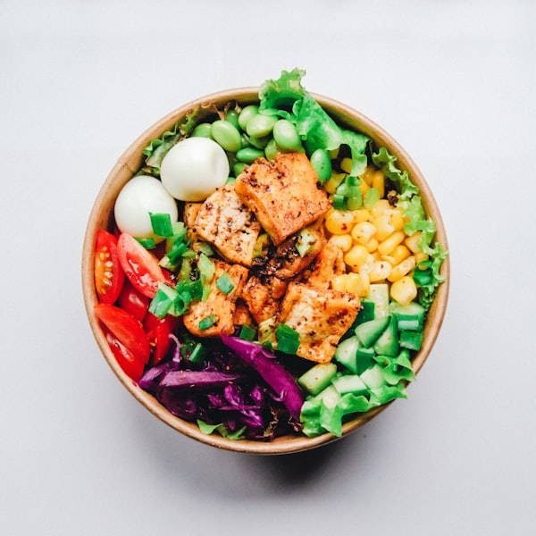

印度擁有世界上最高比例的素食人口。數千年來，這種飲食文化創造了地球上最豐富、最美味的植物性料理。在 Baba 印度料理，我們不僅僅是提供素食選項，我們是將每一道素食菜餚都打造成一場感官盛宴。
對於素食者和純素食者來說，外食往往意味著妥協——沙拉或是簡單的配菜。但在印度料理的世界裡，蔬菜、豆類和香料才是真正的主角。
為什麼印度菜對素食者如此友善？
1. 豐富的豆類與蛋白質
印度料理善用各種豆類（Dals）。我們的黃豆咖哩 (Daal Tadka) 選用優質扁豆，慢火熬煮後以孜然和蒜片熗鍋，提供滿滿的植物性蛋白，口感綿密且香氣十足。

2. 香料的力量
香料能賦予簡單的蔬菜無限可能。以香料馬鈴薯花椰菜 (Aloo Gobi) 為例，透過薑黃、孜然與芫荽粉的巧妙搭配，原本平淡的蔬菜變得鮮甜可口，每一口都能感受到大地的芬芳。
3. 純素食者的多重選擇
許多印度菜餚天然不含乳製品。我們有多款不使用奶油或酥油的咖哩，讓純素（Vegan）朋友也能毫無顧忌地享受道地風味。
Baba 的素食招牌推薦
除了經典的豆類咖哩，您一定要試試我們的波菜乾酪 (Palak Paneer)。現磨的新鮮菠菜泥搭配手工製作的印度乾酪，色澤翠綠，營養均衡。搭配一份全麥烤餅，就是最完美的蔬食晚餐。